The ritual of immersing Lord Ganesha idols in water marking the conclusion of Ganesh Chaturthi, symbolizing the cycle of creation and dissolution.
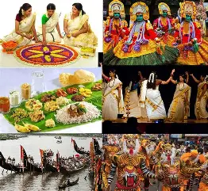
A harvest festival celebrated in Kerala, commemorating the homecoming of King Mahabali with floral decorations, boat races, and grand feasts.
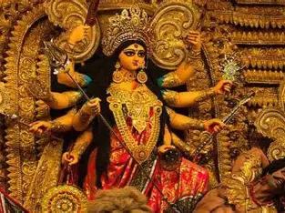
A nine-night festival dedicated to Goddess Durga, celebrated with prayers, fasting, folk dances like Garba, and cultural programs.

The festival of lights, celebrating the victory of light over darkness and good over evil with fireworks, lamps, and sweets.
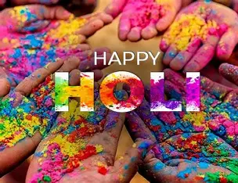
The vibrant festival of colors, marking the arrival of spring, celebrated by throwing colored powders, singing, and dancing.
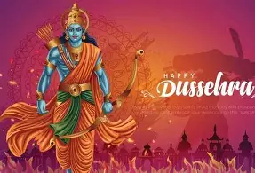
Celebrates the victory of Lord Rama over Ravana and the triumph of good over evil with dramatic enactments and processions.
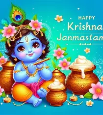
Celebrates the birth of Lord Krishna with devotional singing, fasting, and enactment of his childhood exploits.
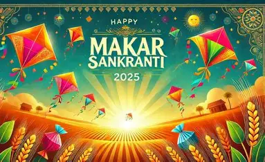
A harvest festival marking the sun’s transition into Capricorn, celebrated with kite flying, feasts, and bonfires.
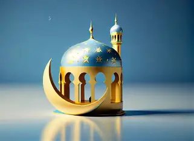
An important Muslim festival marking the end of Ramadan, celebrated with prayers, feasting, and charity.
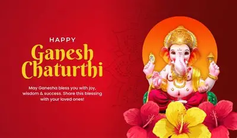
Ganesh Chaturthi is a popular festival in Hinduism marking the birth of the elephant-headed deity Ganesha, the god of prosperity, wisdom, and removal of obstacles.
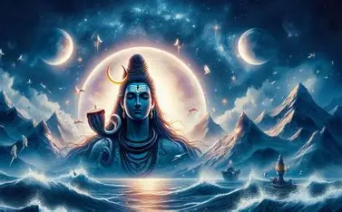
Maha Shivaratri is a deeply spiritual Hindu holiday celebrating Lord Shiva's cosmic dance, marriage to Parvati, and triumph over ignorance.
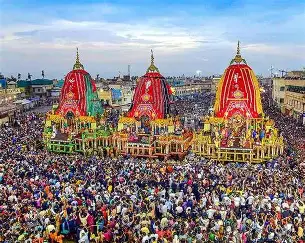
The Jagannath Rath Yatra, held annually in Puri, Odisha, is the world’s oldest and largest chariot festival. Rooted in mythology, it celebrates Lord Jagannath’s symbolic journey to his aunt’s temple
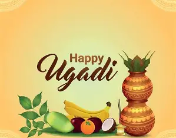
Ugadi symbolizes the beginning of a new age or era, representing the cyclical nature of time. This festival is significant as it embodies the essence of renewal and new beginnings.
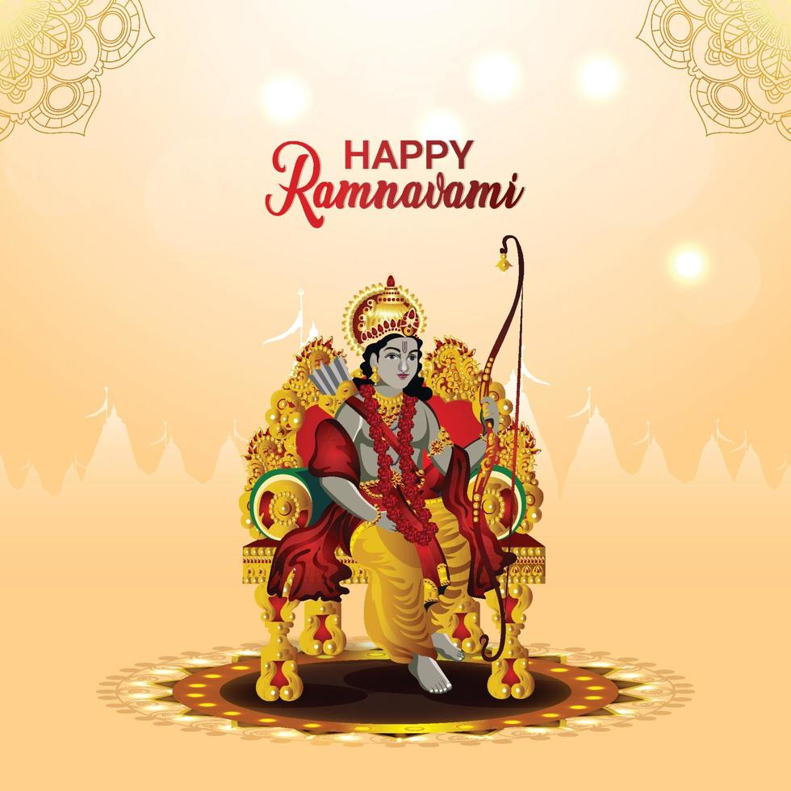
Rama Navami is more than just a festival; it’s a celebration steeped in history, spirituality, and cultural richness.
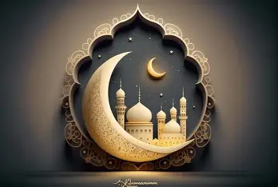
Ramadan is one of the most significant and sacred months in Islam, observed by millions of Muslims around the world. It is a period of fasting, prayer, self-reflection, and community, serving as a time for spiritual renewal and increased devotion to God.
Christmas is celebrated on December 25. The date links to Roman and pagan winter solstice traditions. Early Christians adopted the date to celebrate Jesus' birth.
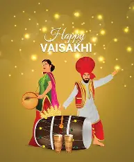
Vaisakhi is both a harvest festival and a spiritual transformation, marking Guru Gobind Singh Sahib’s creation of the Khalsa in 1699. Rooted in Guru Nanak Sahib’s vision, Vaisakhi symbolizes justice, equality, and renewal.
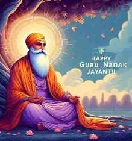
Guru Nanak Jayanti marks the birth anniversary of Guru Nanak, the first of the ten Sikh gurus who shaped the beliefs of the religion.
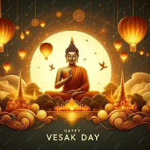
Vesak, also known as Buddha Day, is the most significant festival in the Buddhist calendar. It commemorates the birth, enlightenment, and death (parinirvana) of Siddhartha Gautama, the Buddha.
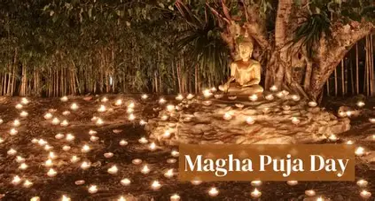
Magha Puja is a day that celebrates the fundamental principles of Buddhism.
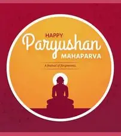
Paryushan Parva (also known as Paryushan Mahaparva) offers an opportunity to consciously reduce worldly activities and create a conducive state of mind that facilitates one to take on a deeper inner journey.
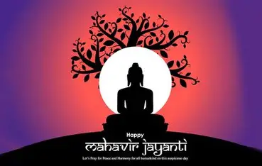
Mahavir Jayanti celebrates the birth of Lord Mahavira, the 24th Tirthankara of Jainism, emphasizing non-violence, truth, and compassion.